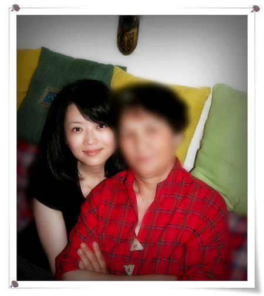

去看望父母，一起在外面吃了午饭。
每到周末父母电话就打来了，问在干吗，准备干吗...
其实他们是盼着与孩子们相聚。
《心理月刊》上写：在我们访问的女儿中，拥有“女人味儿”妈妈的，对妈妈的形象多表示满意。而拥有“母亲味儿”妈妈的，虽然跟母亲感情深厚，但大都希望自己的妈妈能过得再“女人一点”，并且与自己的生活保持距离。如果一个女儿有一个母亲味儿超过女人味儿’的妈妈，那这个女儿就注定不能辜负妈妈，不能让妈妈失望。她甚至不能抱怨妈妈太爱她，因为那会产生负罪感。
如此说来，有一个“女人味儿超过母亲味儿”的妈妈是否就是一件值得庆幸的事情呢？电影大师伯格曼的《秋日奏鸣曲》（Autumn Sonata）为人们展示了母女关系的另一极的荒凉景象。.......作为一个“女人味儿”妈妈的女儿，可能会感到自己被排除在妈妈的生活之外。她们长大后在母性方面的表现，也往往更随意自由。对她们来说做母亲不是一项义务，行为也可以百无禁忌，因为她自己的母亲在这方面表现得比较淡然。
所以做一个差不多的妈妈就是足够好。英国精神分析师Donald W.Winnicott提出了“足够好的母亲”（Good Enough Mother）这一概念。“足够好”在中文中可能会引起歧义，使人误解为“完美”，事实上，它更接近我们中文的“差不多好”的意思。
老妈今年68岁，兼具男人性格和“母亲味儿”....
她不愿上网的，其实她今天的红衫很靓。
我.......也希望自己的妈妈能过得再“女人一点”。

节俭的父母每次在饭店吃不完的菜都会打包带回去。
现在我也养成这样的习惯，打包回家省了做菜时间。

养了7、8年的博美犬，推算下来相当于人的43岁。
见我回来非常兴奋，又是舔我又是叼球来和我玩，博美的性格却有些古怪，玩着玩着它就会莫名其妙地发火，得小心翼翼瞧它的脸色呢。

老妈盯着这条裤子唠叨，在我离开前还不忘从后面提一提它。

10 Responses to “Good Enough Mother”
2009-05-24
博美的性格却有些古怪，玩着玩着它就会莫名其妙地发火，所以得小心翼翼瞧它的脸色。 我哥们的一个女友和它一个脾气，哈哈哈哈，两个人玩着玩着，他女友就莫名其妙地发火，哈哈哈哈！ 太像了！
2009-05-24
说明他们俩不合适呗~
2009-05-24
老妈盯着这条裤子唠叨，在我离开前还不忘从后面提一提它。 这个场景很经典，哈哈：）茶妈妈还是很关注茶的仪容仪表的！：）
2009-05-24
固定每个周日晚饭去公婆家，在安徽的妈妈，基本也每周去看一次快90岁的外公。发现一周见一次，是个不错的频率，主动简单地描述一周工作生活情况，就不会让他们打电话来问这问那
2009-05-25
是个孝顺的好女儿：）
2009-05-25
这个周末花了半天时间在一大堆鹅卵石里找了7块漂亮的石头，回去给妈妈冬天种水仙。
2009-05-25
茶和妈妈的脸型像啊。
2009-05-25
我妈妈年轻的时候脸型比较长，老了胖了..脸型变宽了。我觉得我更象我父亲。
2009-05-25
没修改，只是删减。你的意思我明白就好了，后段实在…有点太…对不起哦！
2009-05-25
努力做better daughter吧
Leave A Reply
存档只读，评论已关闭。